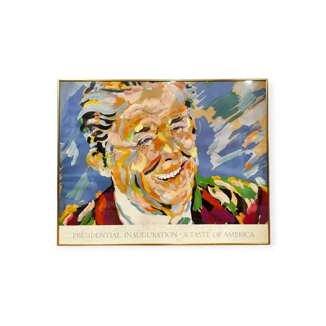
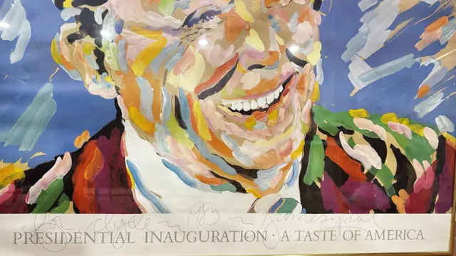

Paintings & Prints
1985 Presidential Inauguration Gala Poster, Signed, Framed, 1985
Unknown · 1985
Price Upon Request


About the Item
A large celebratory poster reproducing a loosely painted head-and-shoulders portrait of a laughing grey-haired man in a dark suit and white collar. The face is built entirely from short unblended strokes of peach, coral, pale blue, ochre and green over a cobalt sky-blue ground, with the same broken colour running through the shoulders. A white band across the foot carries the title in classical capitals, and a pencil dedication and signature run above it. Medium: offset lithograph poster on paper. Signed lower centre right, in pencil across the white band, reading "James paul". Inscribed on the reverse or mount: PRESIDENTIAL INAUGURATION - A TASTE OF AMERICA; for Clyde ~ 1985 ~ James paul (pencil, across the white lower band). Condition: Several bright point reflections on the glazing; the sheet appears clean and unfaded with no visible tears or foxing.
Details
- Creator:
- Unknown
- Creation Year:
- 1985
- Dimensions:
- Height: 25.25 in (64.14 cm)
Width: 32.25 in (81.92 cm)
outside of frame - Medium:
- offset lithograph poster on paper
- Period:
- 20Th
- Condition:
- Offered in the condition shown in the photographs.
- Reference Number:
- VO-192
- Documentation:
- no certificate seen
- Gallery Location:
- PRESIDENTIAL INAUGURATION - A TASTE OF AMERICA; for Clyde ~ 1985 ~ James paul (pencil, across the white lower band)